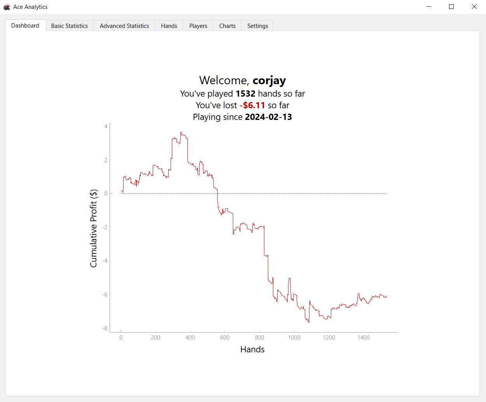
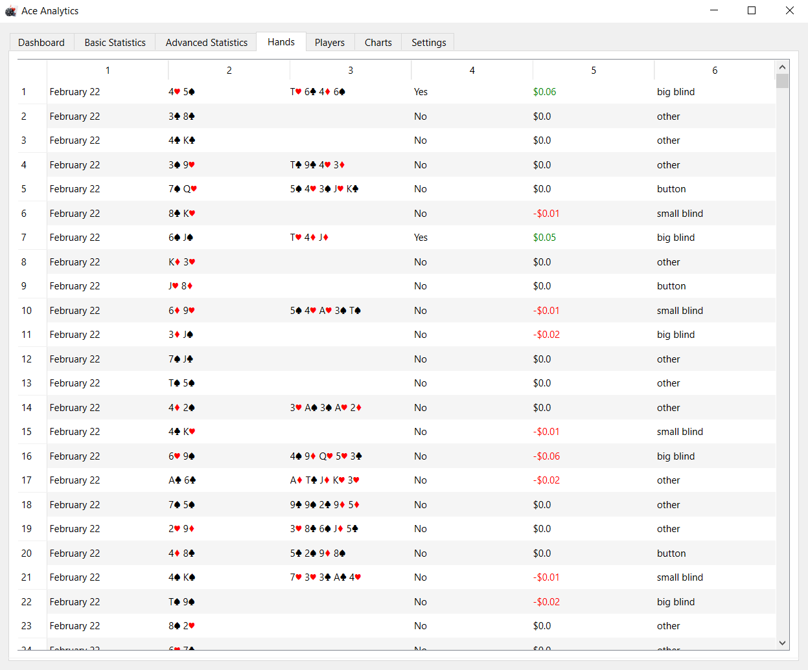

This project is a work in progress and was created while I was trying to get better at poker (unsuccessfully). Because most of the analysis software is expensive, I decided to try to create my own so that I could track my progress and statistics. This application allows the user to view their poker hands, view some basic statistics about their play, and view their overall progress. Eventually, the application will also include more advanced statistics, statistics about players you have seen in games, and personalized reccomendations.
The project is available on GitHub and was created using Python. Specifically, PyQt6 was used for the user interface. Currently, the application only works with the log files generated by ACR Poker but my hope is to eventually support more poker sites. I also hope to package the application as an executable for ease of use once finished as well.
